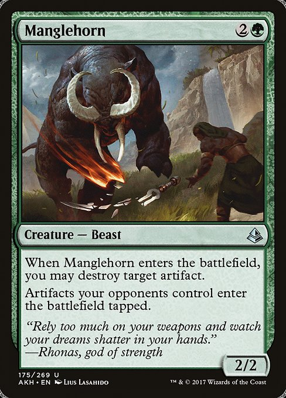

- Ygra, Eater of All
- Academy Manufactor
- Accursed Marauder
- Arcane Signet
- Ashnod's Altar
- Birds of Paradise
- Blood Artist
- Bojuka Bog
- Camellia, the Seedmiser
- Cauldron Familiar
- Cheddar Cheese, sliced x 3
- Command Tower
- Coriander, 1/3rd of a cup, shredded
- Creeping Corrosion
- Cultivate
- Dark Ritual
- Deadly Dispute
- Deathcap Glade
- Disciple of the Vault
- Elanor Gardner
- Exotic Orchard
- Experimental Confectioner
- Fade from History
- Forest x 10
- Gilded Goose
- Golgari Rot Farm
- Grave Pact
- Greta, Sweettooth Scourge
- Gyome, Master Chef
- Hazel's Brewmaster
- Heaped Harvest
- Hotsauce, Culleys No.9 Reaper
- Insidious Fungus
- Karn, the Great Creator
- Kodama's Reach
- Lightning Greaves
- Llanowar Wastes
- Manglehorn
- Mirkwood Bats
- Moldervine Reclamation
- Necroblossom Snarl
- Night of the Sweets' Revenge
- Nuka-Cola Vending Machine
- Overgrown Tomb
- Peregrin Took
- Pest Infestation
- Pickles, Chunky x 4
- Rampant Growth
- Restless Cottage
- Rogue's Passage
- Rootcast Apprenticeship
- Sakura-Tribe Elder
- Savor
- Savvy Hunter
- Scavenger's Talent
- Sol Ring
- Swamp x7
- Swiftfoot Boots
- Tainted Wood
- Tireless Provisioner
- Toxic Deluge
- Trail of Crumbs
- Undergrowth Stadium
- Viridian Revel
- Viscera Seer
- Warren Soultrader
- Welcome to Sweettooth
- Witch's Oven
- Woodland Cemetery
- Zulaport Cutthroat
- Mince
- Olive Oil, 2 tbsp
- Lean Ground Beef, 500g
- Tomato Puree, 1 can
- Tomato Paste, 1 tbsp
- Kosher Salt, 1 tsp
- Lime Juice, 1 tsp
- Smoked Paprika, 2 tsp
- Italian Mixed Herbs, 2 tbsp
- Cajun Spice, 1 tbsp
- Garlic, 4 cloves
- Onion, White
Gameplan
Wincon
Make Ygra big is really our only plan here. As long as it stays on the table there should be enough creatures naturally dying to grow our commander big enough to kill anyone with commander damage in one hit.
I've also won several games when opponents conceded when i got hotsauce all over their cards I destroyed every other creature with Creeping Corrosion
Removal
There's so many effective ways to wipe the board of artifacts in Golgari colors that we don't really need to much single target removal, but Manglehorn gives us a nice efficient option if Ygra is still in the command zone or we want to be politically delicate.
Cards like Fade from History give a powerful wipe that also grows Ygra to enormous size.
Coriander acts as one of our few stax pieces, many folks don't like it and will avoid interacting with you when they see coriander on your board.
Lifegain
My experience playing this deck is that other players will do thier utmost to get you out of the game as quick as possible, probably because the deck is so powerful.
Being able to sacrifice foods gives us a great way to stay in the game. Try to time this carefully, Night of the Sweets' revenge can be a great finisher if we're able to let the food build up.
Also consider eating the cheese and pickles first as this will thin out deck more since we cut them quite chunky.

General tips
The deck works best when you use a hard ceramic playmat rather than a fabric one as it will get soggy.
It's best to take your deck to the bathroom with you if you have to poo midgame as theres a hazard of a cat getting on the table and eating it. knocking it over. As a general tip I think you should always take your deck to the bathroom so no-one tries to look through it.
Avoid using foils as they're harder to chew.